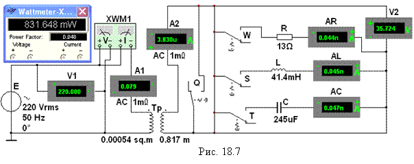

Задание
1. Провести опыт ХХ трансформатора.
С этой целью:
- согласно варианту (см.
табл. 18.1) выбрать тип
трансформатора и рассчитать его
параметры, воспользовавшись методикой, изложенной в разделе 4
"Теоретические сведения …");

- запустить лабораторный комплекс Labworks и программную среду МS10 (щёлкнув мышью на
команде Эксперимент меню
комплекса Labworks). Открыть файл 18.7.ms10, размещённый в папке Circuit Design Suitе 10.0, или собрать на рабочем поле программной среды MS10 схему (рис. 18.7) для испытания однофазного трансформатора и
ввести предварительно рассчитанные
параметры модели трансформатора Тр;
- разомкнуть контакты переключателей, управляемых клавишами Q, W,
S и T клавиатуры, и установить режим АC работы вольтметров V1 и V2 (сопротивления RV
=
10 МОм) и амперметров А1, A2, AR, AL, AC (сопротивления RА = 1 мОм). Запустить программу MS10 и занести показания приборов V1, V2, A1 и
ваттметра XWM1 в табл. 18.2.
Рассчитать и занести в
табл. 18.2 параметры ХХ трансформатора.
|
Установлено |
Измерено |
Вычислено |
||||||||||
|
U1н, В |
f, Гц |
U1н, В |
U20, В |
I0, A |
P, Вт |
n |
i0, % |
Z0, Ом |
R0, Ом |
Х0, Ом |
Р0, Вт |
|
|
|
50 |
|
|
|
|
|
|
|
|
|
|
|
Примечание.
Результаты испытания смоделированного трансформатора типа ОСМ-0,1/0,22
показали (см. рис. 18.7), что значения тока холостого хода I0 @ 79 мА и потери мощности Р0 @ 0,83 Вт при
холостом ходе значительно меньше паспортных данных (I0 @ 110 мА и Р0 » 1 Вт), что
можно объяснить несколько завышенной площадью поперечного сечения магнитопровода
(Sм @ 5,4 см2), принятой при расчёте.